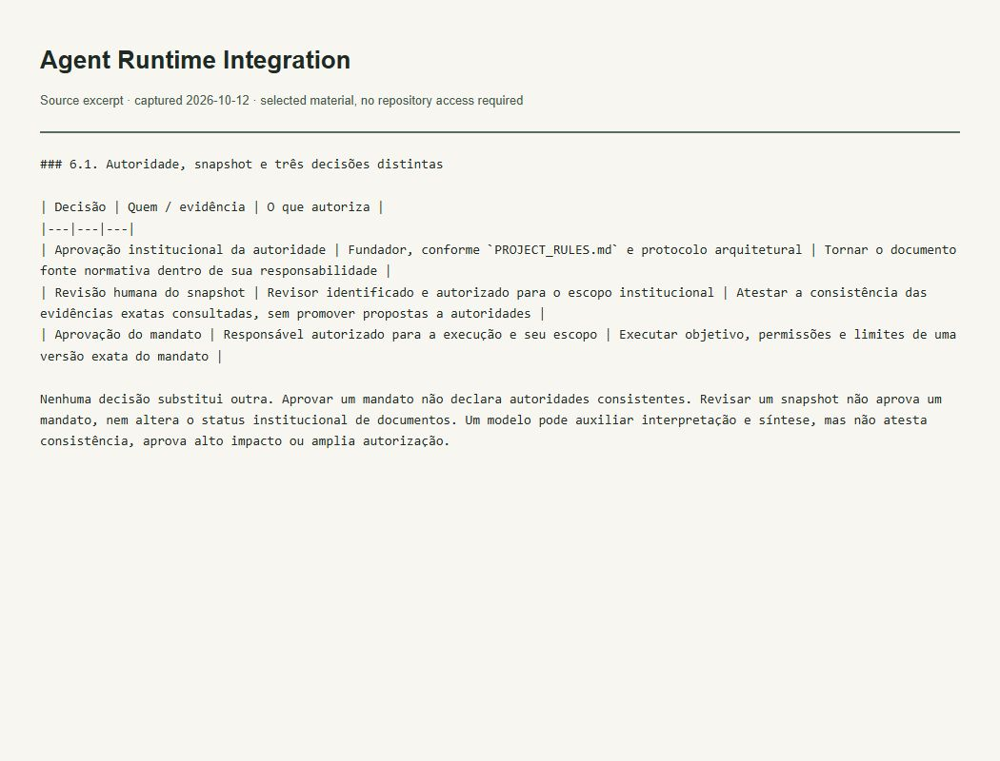

Evidence of the work
Authority and execution boundaries
What this evidence demonstrates
Separates institutional approval, snapshot review and mandate approval.

Read accessible verbatim transcript
### 6.1. Autoridade, snapshot e três decisões distintas | Decisão | Quem / evidência | O que autoriza | |---|---|---| | Aprovação institucional da autoridade | Fundador, conforme `PROJECT_RULES.md` e protocolo arquitetural | Tornar o documento fonte normativa dentro de sua responsabilidade | | Revisão humana do snapshot | Revisor identificado e autorizado para o escopo institucional | Atestar a consistência das evidências exatas consultadas, sem promover propostas a autoridades | | Aprovação do mandato | Responsável autorizado para a execução e seu escopo | Executar objetivo, permissões e limites de uma versão exata do mandato | Nenhuma decisão substitui outra. Aprovar um mandato não declara autoridades consistentes. Revisar um snapshot não aprova um mandato, nem altera o status institucional de documentos. Um modelo pode auxiliar interpretação e síntese, mas não atesta consistência, aprova alto impacto ou amplia autorização.
Context and limits
An architectural requirement; consumers need separate implementation validation.
The image captures a locally rendered literal excerpt from the verified file. It is not a GitHub UI screenshot or a running-application screenshot. The excerpt retains its original language.